Vehicle Dynamics, 14 DOF Model (Heave and Roll DOFs Per Axle)
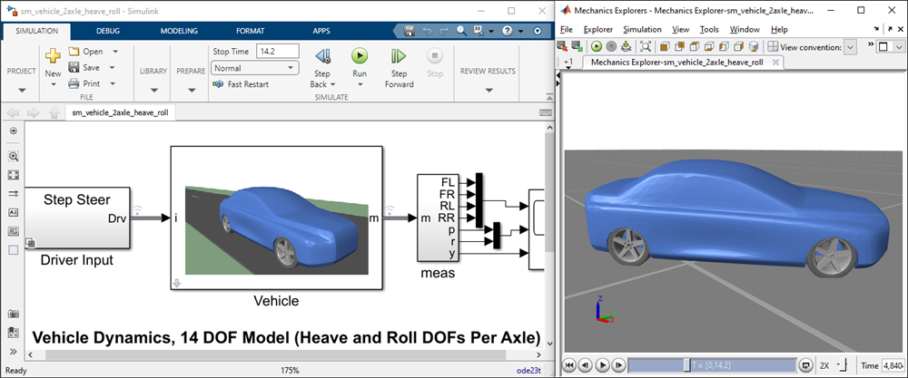
Open Vehicle Dynamics, 14 DOF Model
(return to Vehicle Dynamics Overview)
This example models vehicle dynamics using a vehicle model that has 14 degrees of freedom. The driver inputs and scene where the vehicle is driving can be configured as you select one of the maneuvers.
The vehicle model includes a six degree-of-freedom body model, two axles each with heave and roll degrees of freedom, and four wheels that rotate. The front wheels are steered using the Ackermann steering equation. Many of the vehicle parameters can be modified using MATLAB.
The tire model is the Magic Formula Tire Force and Torque block from Simscape Multibody. You can plot the forces and torques at the contact patch from the simulation results.
Explore the Simscape Vehicle Templates for more customizable models of battery-electric vehicles, hybrid-electric, and multi-axle vehicles.
Acknowledgements: MathWorks would like to thank M V Krishna Teja, PhD, Virtual Proving Ground and Simulation Lab, Raghupati Singhania Centre of Excellence at the Indian Institute of Technology, Madras for providing the tire parameters for this example.
Contents
- Model
- Vehicle Model
- Tire Model
- Simulation Results from Simscape Logging, Step Steer
- Simulation Results from Simscape Logging, Sine with Dwell
- Simulation Results from Simscape Logging, Slalom
- Simulation Results from Simscape Logging, Slalom on Hill
- Simulation Results from Simscape Logging, Plateau
- Simulation Results from Simscape Logging, Rough Road
- Simulation Results from Simscape Logging, Parking
Model
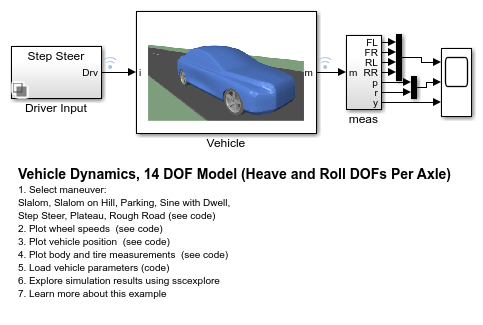Vehicle Model
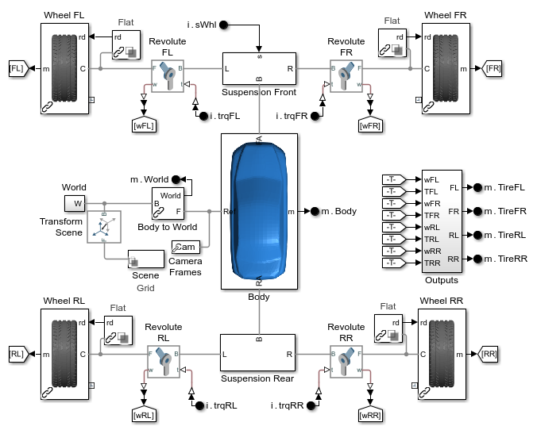Tire Model
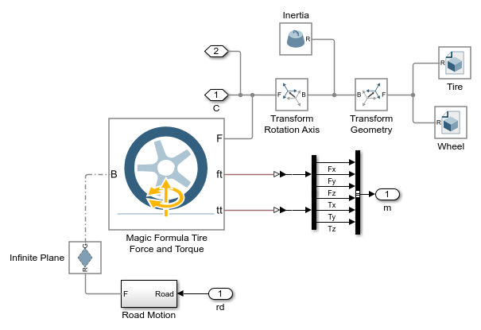Simulation Results from Simscape Logging, Step Steer
The plot below shows the wheel speeds during the maneuver. The rotational wheel speeds are scaled by the unloaded radius so they can be compared with the translational speed of the vehicle. Additional plots below show vehicle position, body roll angle, body pitch angle, and tire normal forces.
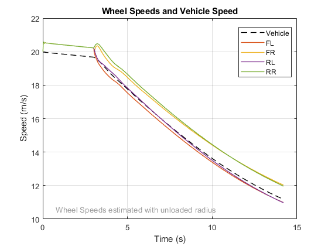 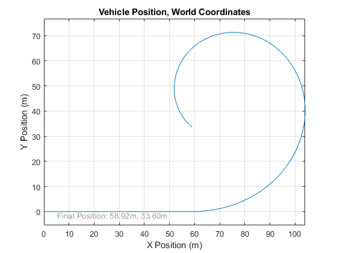
Simulation Results from Simscape Logging, Sine with Dwell
The plot below shows the wheel speeds during the maneuver. The rotational wheel speeds are scaled by the unloaded radius so they can be compared with the translational speed of the vehicle. Additional plots below show vehicle position, body roll angle, body pitch angle, and tire normal forces.
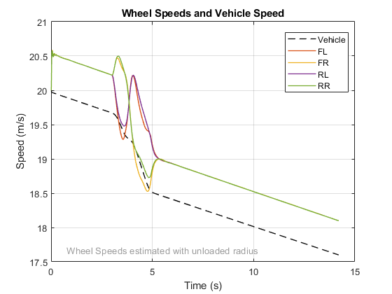 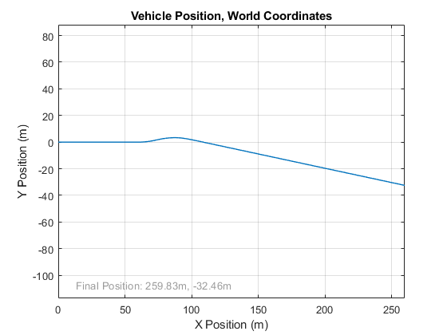 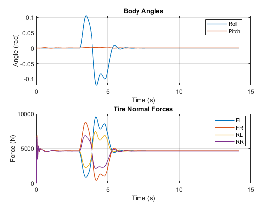Simulation Results from Simscape Logging, Slalom
The plot below shows the wheel speeds during the maneuver. The rotational wheel speeds are scaled by the unloaded radius so they can be compared with the translational speed of the vehicle. Additional plots below show vehicle position, body roll angle, body pitch angle, and tire normal forces.
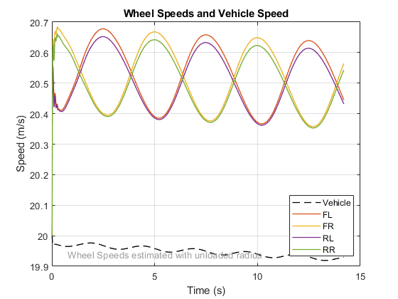 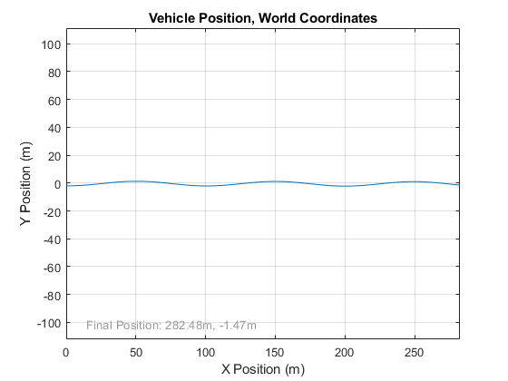 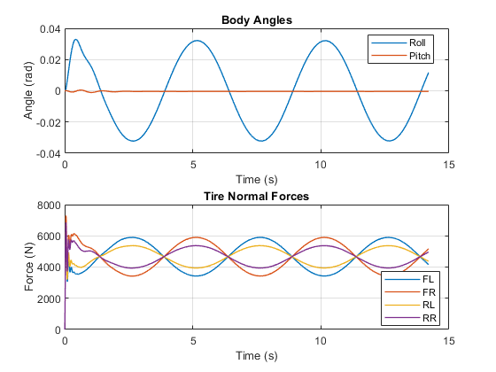Simulation Results from Simscape Logging, Slalom on Hill
In this maneuver, the vehicle is in motion at the start of the simulation. It coasts up a hill, and when its momentum cannot carry it any further it rolls back down the hill. The driver moves the steering wheel back and forth. This tests the tire model on a hill with a slope, at low speeds, and in both forward and reverse directions.
The plot below shows the wheel speeds during the maneuver. The rotational wheel speeds are scaled by the unloaded radius so they can be compared with the translational speed of the vehicle. An additional plot below shows vehicle position.
 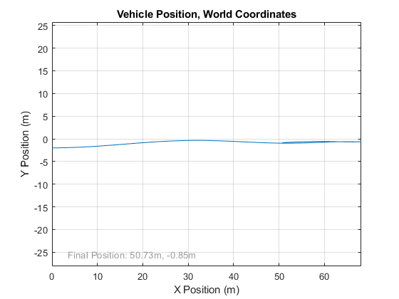
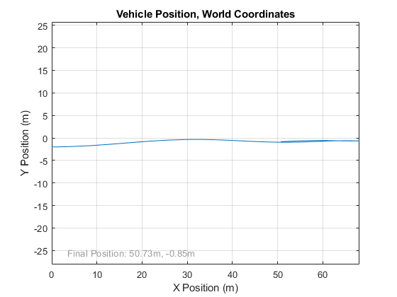 Simulation Results from Simscape Logging, Plateau
In this maneuver, the vehicle is in motion at the start of the simulation. It coasts up a hill, rolls across the top, and then coasts down the hill on the other side.
The plot below shows the wheel speeds during the maneuver. The rotational wheel speeds are scaled by the unloaded radius so they can be compared with the translational speed of the vehicle. The vehicle speed drops as it climbs the hill, and then it increases again as it coasts down the other side. This shows that the tire model takes into account the slope of the road. Additional plots below show body roll angle, body pitch angle, and tire normal forces.
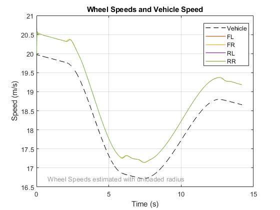 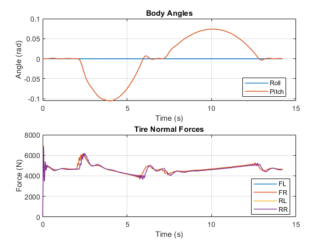Simulation Results from Simscape Logging, Rough Road
In this maneuver, the vehicle is in motion at the start of the simulation. It coasts along an uneven road which exercises the suspension and causes the car to pitch and roll. Additional plots below show body roll angle, body pitch angle, and tire normal forces.
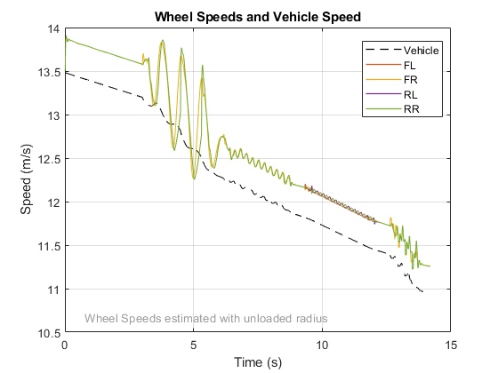 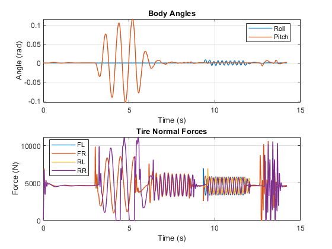Simulation Results from Simscape Logging, Parking
In this maneuver, the vehicle is resting at the side of the road. The driver steers the wheels before accelerating away from the side of the road. This tests the tire turning on the spot, as well as accelerating away from rest.
The plot below shows the wheel speeds during the maneuver. The rotational wheel speeds are scaled by the unloaded radius so they can be compared with the translational speed of the vehicle. Additional plots below show body roll angle, body pitch angle, and tire normal forces.
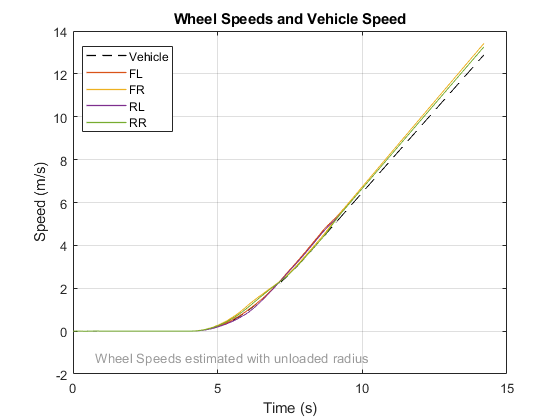 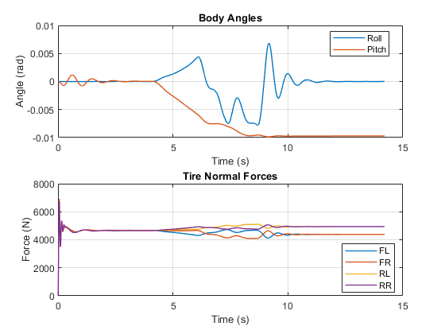